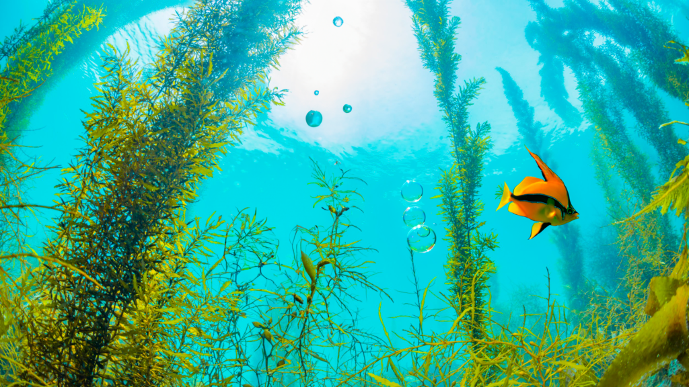
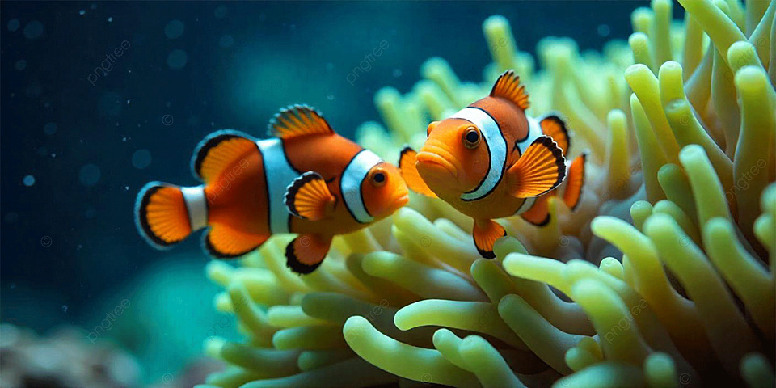
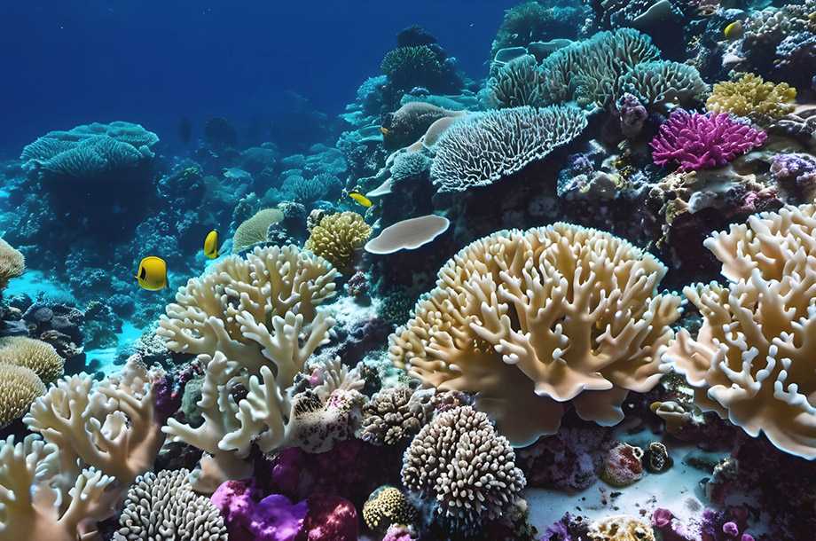
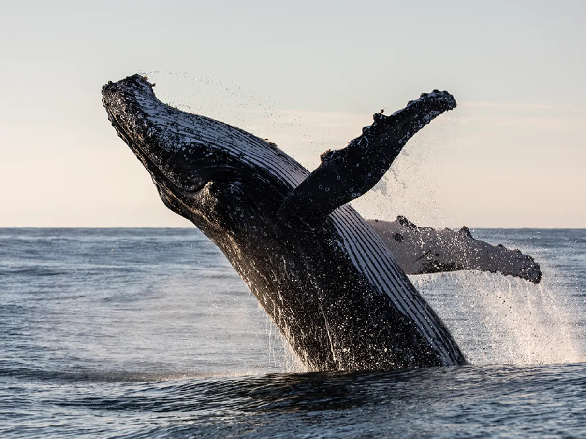

Regulação do clima
Oceanos absorvem calor e CO₂, ajudando a mitigar efeitos das mudanças climáticas.
A vida marinha abrange organismos que habitam mares e oceanos — do plâncton às baleias azuis. Essa biodiversidade é essencial para o equilíbrio dos ecossistemas e para a manutenção da vida na Terra.
Inclui plâncton, algas, moluscos, crustáceos, peixes, corais e grandes mamíferos. A diversidade ainda é pouco conhecida em regiões profundas — o que abre espaço para novas descobertas científicas.




A vida marinha ou vida oceânica são as comunidades ecológicas coletivas que abrangem todos os animais aquáticos , plantas , algas , fungos , protistas , microrganismos unicelulares e vírus associados que vivem na água salgada dos habitats marinhos , seja na água do mar de mares e oceanos marginais , ou na água salobra de zonas húmidas costeiras , lagoas , estuários e mares interiores . Em 2023 , mais de 242.000 espécies marinhas foram documentadas, e talvez dois milhões de espécies marinhas ainda estejam por documentar. Uma média de 2.332 novas espécies por ano estão sendo descritas. A vida marinha é estudada cientificamente tanto na biologia marinha quanto na oceanografia biológica...
Saiba mais em WikipédiaOceanos absorvem calor e CO₂, ajudando a mitigar efeitos das mudanças climáticas.
Fitoplâncton realiza fotossíntese e contribui de forma significativa para o O₂ atmosférico.
Pesca, aquicultura e turismo costeiro sustentam economias e garantem segurança alimentar.
Corais e manguezais protegem costas; correntes e organismos reciclam nutrientes.
Esta seção adota um tom mais sério: foco em riscos e prevenção.
Plásticos e microplásticos: resíduos entram nas cadeias alimentares.
Poluentes químicos: agrotóxicos, metais pesados e esgoto causam toxicidade.
Derrames de óleo e resíduos perigosos causam danos extensos a habitats.
Leituras: 123 Ecos – Ecopédia; Instituto Água Sustentável.
Exploração sem descanso rebaixa populações e desequilibra ecossistemas.
Leituras: Projeto Bióicos; Iberdrola (ODS 14).
Corais: branqueamento por aquecimento, poluição e pesca destrutiva.
Manguezais: perda por expansão urbana/agropecuária reduz berçários de espécies.
Aquecimento oceânico altera distribuição e sobrevivência das espécies.
Acidificação dificulta formação de conchas/esqueletos em corais e moluscos.
Desoxigenação afeta peixes e invertebrados.
Leituras: Wikipedia; UNESCO (programas marinhos).
Introduzidas por água de lastro ou outros meios, competem, predam e transmitem doenças.
Leituras: Instituto Marulho Eco; A Rocha (rede internacional).
Região com altíssima biodiversidade (corais, peixes, manguezais) e vulnerável a pesca destrutiva e mudanças climáticas.
Leitura: Wikipedia.
Iniciativa global para ciência que precisamos e oceano que queremos — mobiliza governos, empresas e sociedade.
Leitura: UNESCO / Ocean Decade.
Criação/expansão de áreas protegidas vem acelerando em vários países, sinalizando ações concretas de conservação.
Sugestão de busca: “Marine Protected Areas recent”.